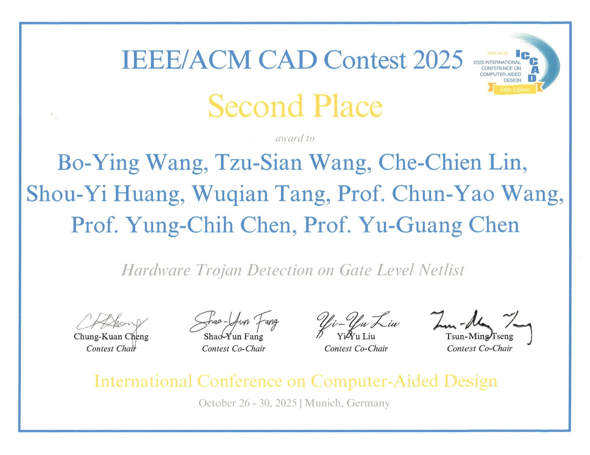
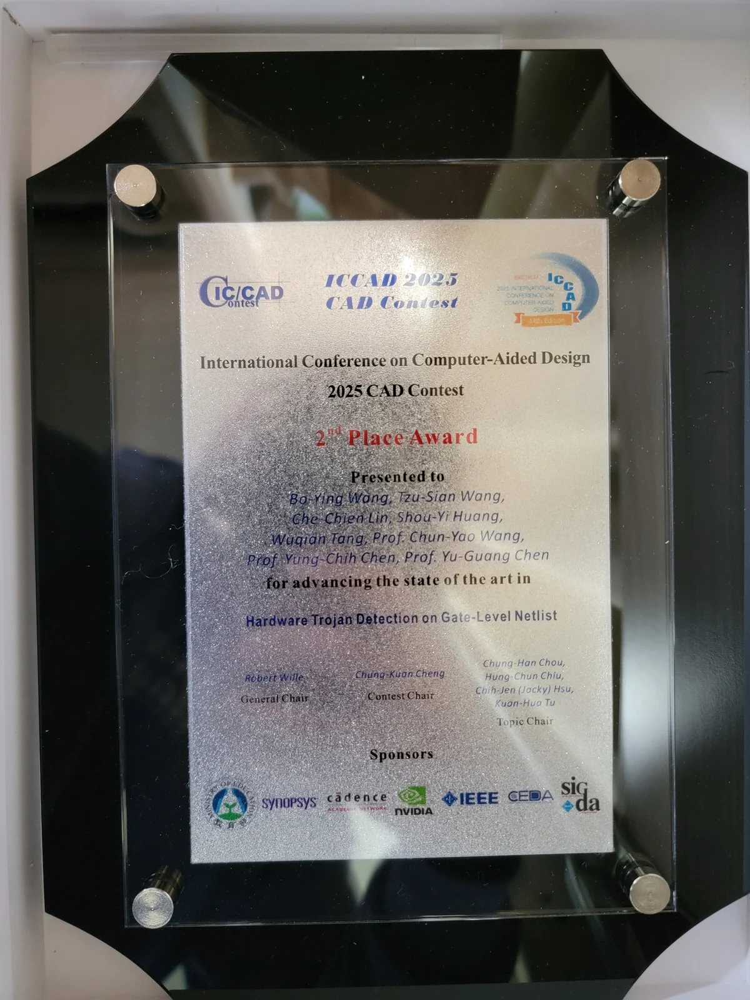
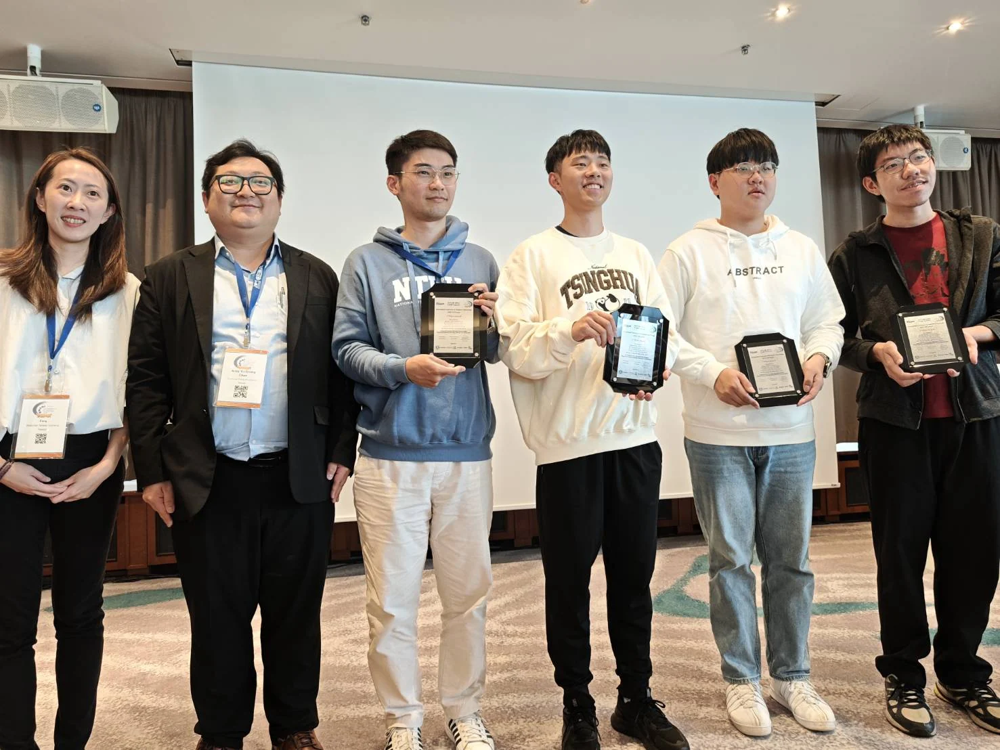
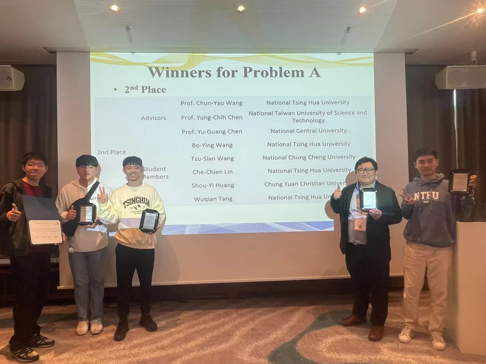

Awards & Honors · Oct 2025
Second Place (Problem A), ICCAD CAD Contest
Hardware Trojan Detection on Gate Level Netlist
Certificates1


Plaques1


Photos2




Awards & Honors · Oct 2025
Hardware Trojan Detection on Gate Level Netlist



